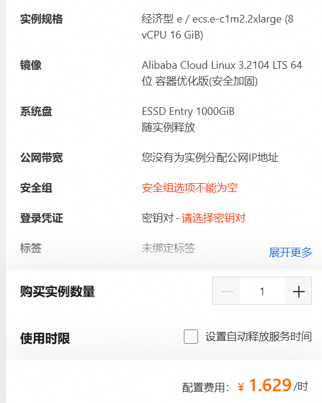

使用公网代理家庭服务器搭建网站的成本思考
最近在想使用家里的电脑来运行某些网站服务，那就需要思考一下费用之类的性价比问题，简单做了个图如下
看上图不难发现使用代理服务模式相比直连模式不仅从一上一下的请求响应变成了两上两下（响应时间和流量都会增加），而且还是需要一台公网服务器。
这就涉及到服务器的成本问题了。现在家里随便整一台电脑都能有个4核八核16G 32G内存，致态 ssd 1T也才五百多。而这样配置的云服务器可就太贵了
这里以阿里的按量付费服务器的成本为例：

可以看到 8vCPU（4核）16G 1T ESSD 的成本为 1.629 每小时。一个月的成本就是 1,172.88 一千一百块钱相信很多朋友都能攒出来超越 8vCPU（4核）16G 1T ESSD 性能的机器了。这还只是一个月的成本（不含流量）！
那么如果让网络响应稍微慢一些，然后使用家庭自建服务器会是什么样的成本呢。
假设机器比较高配，花了 3000 （远超上面公网服务器的性能了）这也只要三个月不到就回本了，当然还需要付出额外的电费。家庭带宽费用不计，因为这本就是必须品，不这么做也得花这么多钱。
相比公网服务器直连的模式这种代理模式的缺点就是流量费用会高一些，因为国内按量付费计算一般公网入方向的流量是不收费的，而代理模式按
上面我的绘图 可以看出来由于从一上一下变成了两上两下，这会导致原来不会收费的请求数据包流量也会收费（但这并不意味着流量费翻倍，因为一般而言请求数据包是远小于响应数据包的，所以响应数据包的流量费才是占据大头）
但这还是能够极大的节约成本，因为就不需要买高价的公网服务器了，只要买一个超低配的公网服务器然后给他配置一个100M的按量付费带宽（等于是每月花了几十块钱（一般云厂商还有优惠活动，比如99块一年的服务器））买了一条按量付费的公网带宽。
我认为这是在保证基本流畅的网站响应速度的前提下最具备性价比的方案了。
当然还有 cloudflare tunnels 这样的纯白嫖方案，但是网络就太差了。